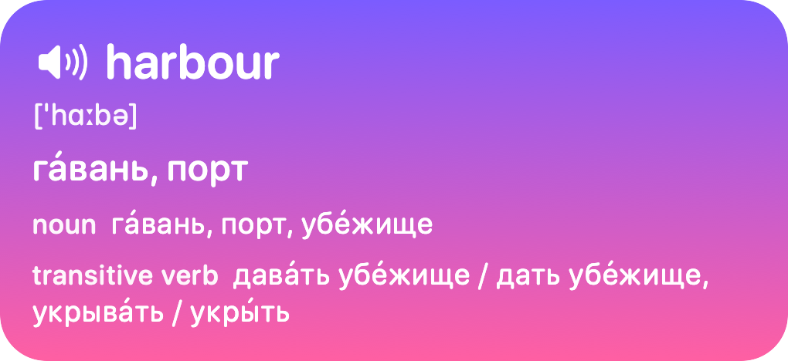
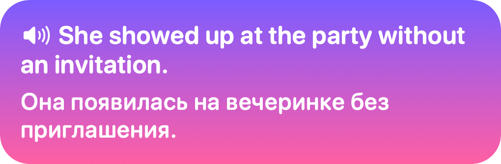
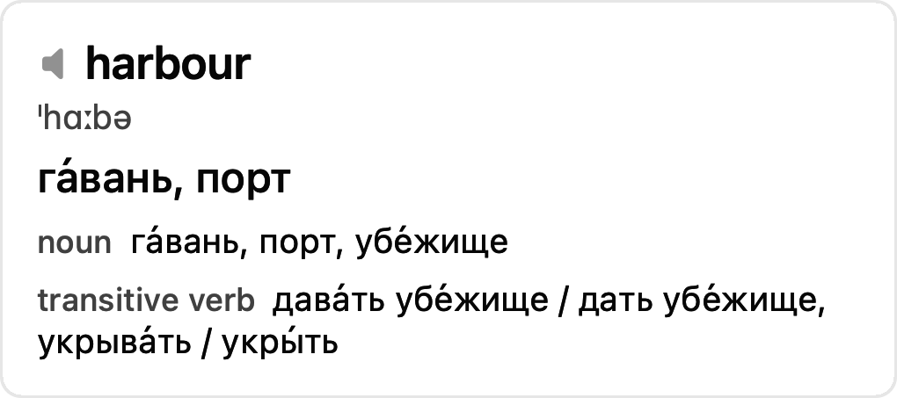
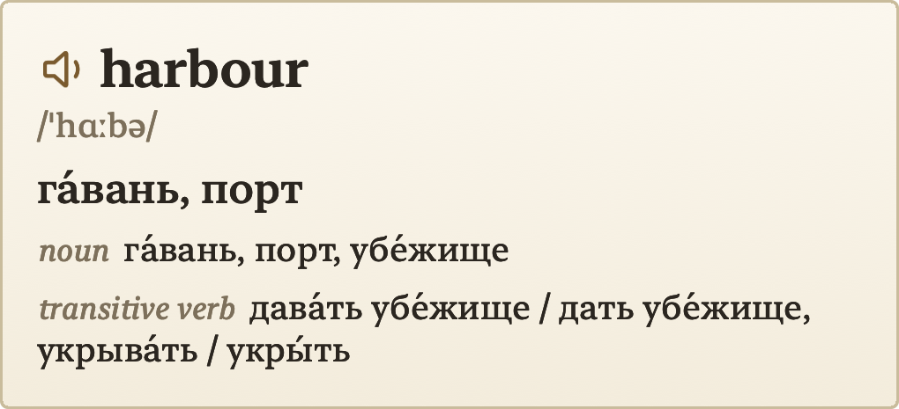

Select an English word anywhere on your Mac and tap ⌥⌥. Saytap says it out loud and shows its translation right next to the cursor.
Free and open source · macOS 26 or later · Apple silicon
Ships sheltered in the harbour until the storm passed.

No copying, no switching apps, no browser tabs. One gesture, and you know how a word sounds and what it means.
Speech comes from Phonon, an open text-to-speech model running on the Neural Engine. A word starts playing in about 20 ms, and nothing is sent anywhere.
Words and phrasal verbs come from the Oxford bilingual dictionary built into macOS, with transcription and meanings by part of speech. Offline.
Longer text is translated by Google Translate, with Apple's on-device Translation taking over when Google is slow.
Safari, Notes, PDFs, your code editor. A quick double tap of Option, so your usual shortcuts keep working.
Every look-up is saved to a searchable history on your Mac. Listen to a word again, or delete it once you've learnt it.
Six voices and eight speeds, from 0.25× for tricky words to 2× for a quick check.
From playful to prim: four styles to choose from in the menu bar.



Each look-up stops at the first source that answers, so most words never leave your Mac.
Built into macOS. Instant and offline, for words and phrasal verbs.
A phrase you've looked up before is answered from your Mac.
For sentences the dictionary doesn't have.
On-device, when Google doesn't answer within a second.
Saytap is free and open source. You build it on your own Mac and sign it with your own certificate, so macOS trusts it with the selected text. The guide on GitHub walks you, or your AI coding agent, through it in about ten minutes.
Download on GitHub# after creating the signing certificate
git clone https://github.com/vitalyliber/saytap.git
cd saytap
./build.sh